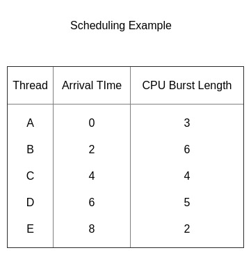
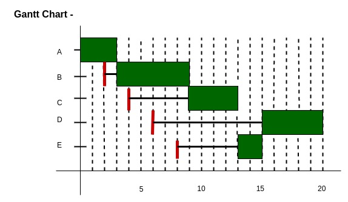

Prerequisite – CPU Scheduling
Given n processes with their Arrival times and Burst times, the task is to find average waiting time and average turn around time using HRRN scheduling algorithm.
The name itself states that we need to find the response ratio of all available processes and select the one with the highest Response Ratio. A process once selected will run till completion.
Criteria – Response Ratio
Mode – Non-Preemptive
Response Ratio = (W + S)/S
Here, W is the waiting time of the process so far and S is the Burst time of the process.
Performance of HRRN –
- Shorter Processes are favoured.
- Aging without service increases ratio, longer jobs can get past shorter jobs.

Gantt Chart –

Explanation –
- At t = 0 we have only one process available, so A gets scheduled.
- Similarly at t = 3 we have only one process available, so B gets scheduled.
- Now at t = 9 we have 3 processes available, C, D and E. Since, C, D and E were available after 4, 6 and 8 units respectively. Therefore, waiting time for C, D and E are (9 – 4 =)5, (9 – 6 =)3, and (9 – 8 =)1 unit respectively.
- Using the formula given above we calculate the Response Ratios of C, D and E respectively as 2.25, 1.6 and 1.5.
- Clearly C has the highest Response Ratio and so it gets scheduled
- Next at t = 13 we have 2 jobs available D and E.
- Response Ratios of D and E are 2.4 and 3.5 respectively.
- So process E is selected next and process D is selected last.
Implementation of HRRN Scheduling –
- Input the number of processes, their arrival times and burst times.
- Sort them according to their arrival times.
- At any given time calculate the response ratios and select the appropriate process to be scheduled.
- Calculate the turn around time as completion time – arrival time.
- Calculate the waiting time as turn around time – burst time.
- Turn around time divided by the burst time gives the normalized turn around time.
- Sum up the waiting and turn around times of all processes and divide by the number of processes to get the average waiting and turn around time.
Code –
#include <stdio.h>
// Defining process details
struct process {
char name;
int at, bt, ct, wt, tt;
int completed;
float ntt;
} p[10];
int n;
// Sorting Processes by Arrival Time
void sortByArrival()
{
struct process temp;
int i, j;
// Selection Sort applied
for (i = 0; i < n - 1; i++) {
for (j = i + 1; j < n; j++) {
// Check for lesser arrival time
if (p[i].at > p[j].at) {
// Swap earlier process to front
temp = p[i];
p[i] = p[j];
p[j] = temp;
}
}
}
}
void main()
{
int i, j, t, sum_bt = 0;
char c;
float avgwt = 0, avgtt = 0;
n = 5;
// predefined arrival times
int arriv[] = { 0, 2, 4, 6, 8 };
// predefined burst times
int burst[] = { 3, 6, 4, 5, 2 };
// Initializing the structure variables
for (i = 0, c = 'A'; i < n; i++, c++) {
p[i].name = c;
p[i].at = arriv[i];
p[i].bt = burst[i];
// Variable for Completion status
// Pending = 0
// Completed = 1
p[i].completed = 0;
// Variable for sum of all Burst Times
sum_bt += p[i].bt;
}
// Sorting the structure by arrival times
sortByArrival();
printf("\nName\tArrival Time\tBurst Time\tWaiting Time");
printf("\tTurnAround Time\t Normalized TT");
for (t = p[0].at; t < sum_bt;) {
// Set lower limit to response ratio
float hrr = -9999;
// Response Ratio Variable
float temp;
// Variable to store next processs selected
int loc;
for (i = 0; i < n; i++) {
// Checking if process has arrived and is Incomplete
if (p[i].at <= t && p[i].completed != 1) {
// Calculating Response Ratio
temp = (p[i].bt + (t - p[i].at)) / p[i].bt;
// Checking for Highest Response Ratio
if (hrr < temp) {
// Storing Response Ratio
hrr = temp;
// Storing Location
loc = i;
}
}
}
// Updating time value
t += p[loc].bt;
// Calculation of waiting time
p[loc].wt = t - p[loc].at - p[loc].bt;
// Calculation of Turn Around Time
p[loc].tt = t - p[loc].at;
// Sum Turn Around Time for average
avgtt += p[loc].tt;
// Calculation of Normalized Turn Around Time
p[loc].ntt = ((float)p[loc].tt / p[loc].bt);
// Updating Completion Status
p[loc].completed = 1;
// Sum Waiting Time for average
avgwt += p[loc].wt;
printf("\n%c\t\t%d\t\t", p[loc].name, p[loc].at);
printf("%d\t\t%d\t\t", p[loc].bt, p[loc].wt);
printf("%d\t\t%f", p[loc].tt, p[loc].ntt);
}
printf("\nAverage waiting time:%f\n", avgwt / n);
printf("Average Turn Around time:%f\n", avgtt / n);
}
Output –
Name Arrival Time Burst Time Waiting Time TurnAround Time Normalized TT A 0 3 0 3 1.000000 B 2 6 1 7 1.166667 C 4 4 5 9 2.250000 E 8 2 5 7 3.500000 D 6 5 9 14 2.800000 Average waiting time:4.000000 Average Turn Around time:8.000000